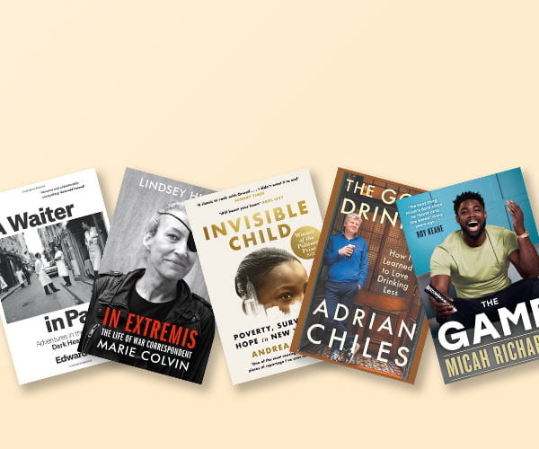

March 2023

If you adore Paris and love
eating out, this is a must read.
A thrilling and compelling
account of working in the
demanding and competitive
culinary world of one of the
most beautiful cities in the world.
An engrossing life story of the
war correspodent Marie Colvin.
An account of a courageous,
complex and incredible journalist.
She is an inspiration to
women,
aspiring journalists and for
anyone with a compassion
for
the oppressed people of the
world. An addictive read.
The heartbeaking account of
the life of Dasani Coates, a
young girl with great imagination.
Dasani and her extended family
lived in poverty, living in
a
number of homeless shelters. A
masterpeice in reporting as we
follow the tribulations and
struggles of a family who
endure severe hardships.
The popular broadcaster and
columnist sets out to discover the
unsung pleasures of drinking
in
moderation. It's not a book to
tell us to give up drinking
alltogether but an amusing
tale
of how we should look at
our drinking habits. Funny and
thought provoking. I loved it.
A laugh-out-load expose of what
it is to be a modern premier
league footballer. Micah shares
his funniest and frankest
stories
from on and off the pitch. He
reflects openly on the many wins
and losses in professional
football.
Far better than other sporting
biographies you are going
to read. A great read.